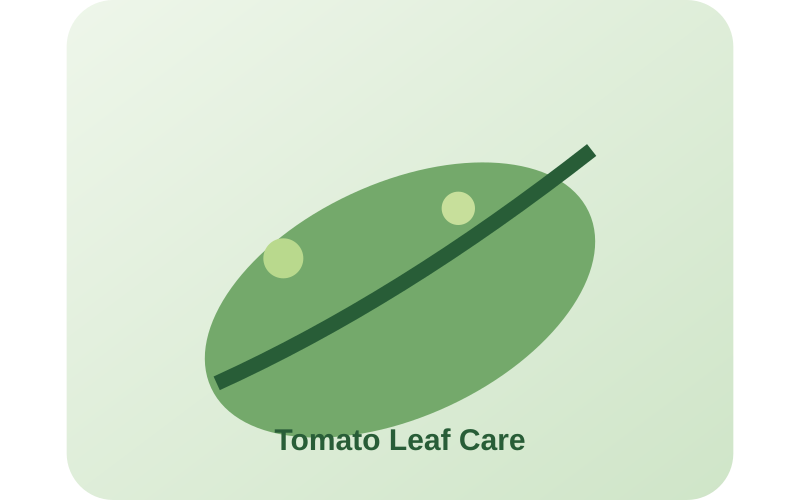
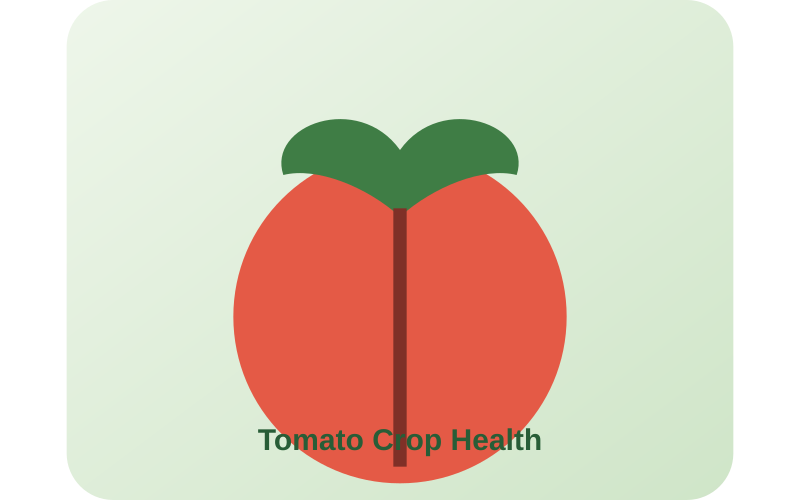

Upload a photo of a tomato leaf and get instant AI-based disease detection, quality assessment, and smart treatment recommendations.


CropCare AI is a deep learning-powered tool built to help tomato growers catch disease early. Our model, trained on real tomato leaf imagery, classifies common infections and estimates severity — so you can act before a small problem becomes crop-wide damage.
We're currently focused entirely on tomato crops, so every part of the detection pipeline — from training data to recommendations — is tuned specifically for tomato disease patterns.
Identify common tomato leaf diseases accurately from a single photo.
Grade crop quality instantly with a confidence score for every result.
Get the right treatment suggestion for whatever's detected.
Take a clear photo of a tomato leaf and upload it from the Upload & Detect page.
Our model analyzes the leaf and classifies disease type and severity in seconds.
See the diagnosis, quality grade, and a recommended next step — saved to your history.
Questions about CropCare AI or want to collaborate? Reach out and we'll get back to you.
Email Us